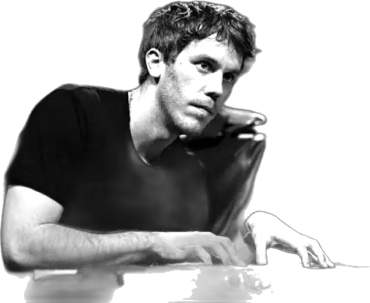
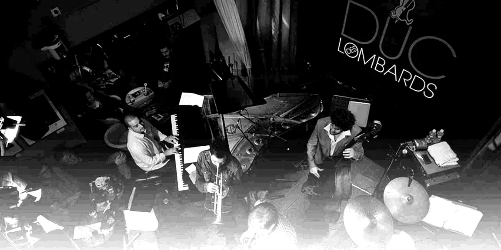

Le Duc

Par an300+
Par soir2 sets
Par set75′
Selon Bobby Few
- Un bon piano
- Un patron ouvert
- Un public attentif
- Un lieu pour improviser après
- La proximité
L’équipe
Gérant
Lionel Guy-Bremond
Gérant
Marc Welinski
Direction artistique
Sébastien Vidal
Direction adjointe
Noëmi Flamen
Administration
Laure Stokober
Coordination de salle
Amma Dakwa
Chef de salle
Michel Chan
Chef de salle
Julien Oumraou
Cheffe de salle
Carine Nguyen
Bar
Daniel Lamidey
Partenaires
TSF Jazz · CNM · ADAMI · SACEM · Ville de Paris · Copie privée · Paris Jazz Club · SPEDIDAM